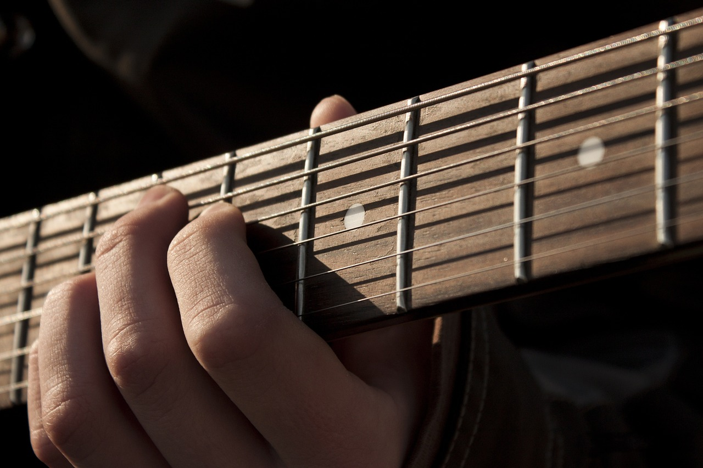
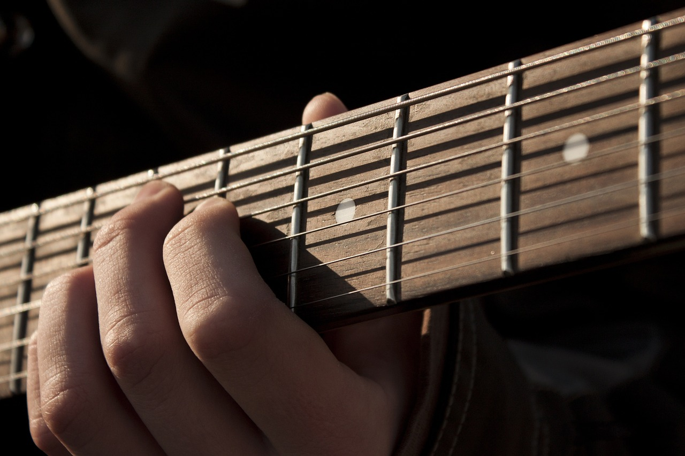
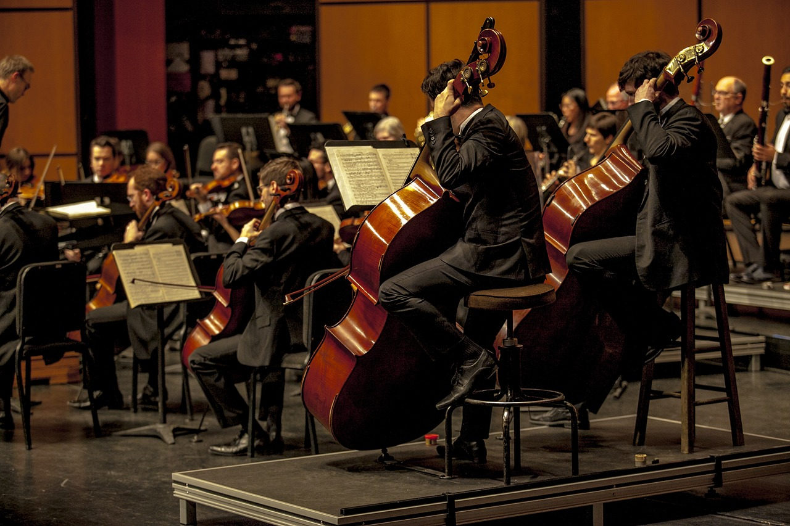
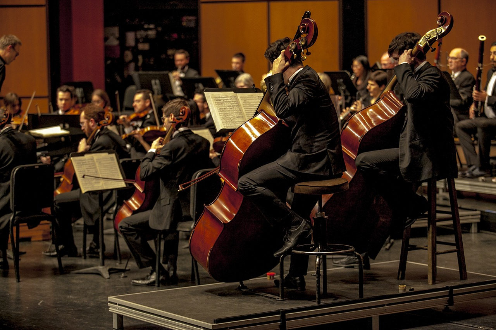

Nossos Cursos


 

Sobre Nós
Fundada em 1992, a Tito Music School nasceu do sonho de um grupo de músicos apaixonados por compartilhar seu conhecimento e amor pela música. Localizada no coração da cidade, a escola rapidamente se destacou pela qualidade de seu ensino e pela dedicação de seus professores. Ao longo dos anos, a Tito Music School desenvolveu um currículo abrangente que abrange desde a teoria musical até a prática instrumental e vocal. Com aulas personalizadas e um ambiente acolhedor, a escola se tornou um ponto de referência para jovens talentos que desejam seguir carreira na música. A Tito Music School não apenas ensina música, mas também prepara seus alunos para o mercado profissional. Com parcerias com estúdios de gravação, produtores e eventos musicais, a escola oferece oportunidades únicas para que seus alunos ganhem experiência prática e construam uma rede de contatos valiosa. Hoje, a Tito Music School é reconhecida por formar alguns dos melhores músicos do país. Seus ex-alunos ocupam posições de destaque em orquestras, bandas e como artistas solo, levando o nome da escola a palcos nacionais e internacionais. Com uma história de sucesso e um compromisso contínuo com a excelência, a Tito Music School continua a inspirar e moldar as futuras gerações de músicos.
Aulas de Instrumentos
Piano
O curso de piano da Tito Music School é projetado para alunos de todas as idades e níveis de habilidade. As aulas são ministradas por instrutores experientes e cobrem uma ampla gama de estilos musicais, incluindo clássico, jazz, pop e R&B. Os alunos aprendem técnicas de piano, leitura de partituras, teoria musical e improvisação. As aulas podem ser presenciais ou virtuais, oferecendo flexibilidade para se adaptar às necessidades dos alunos. Além disso, a escola incentiva a prática regular e oferece oportunidades para apresentações e recitais.
Baixo
O curso de contrabaixo da Tito Music School é ideal para alunos de todos os níveis, desde iniciantes até avançados. As aulas são conduzidas por instrutores qualificados que ensinam técnicas essenciais, como pizzicato, slap, e uso de palheta. Os alunos aprendem a ler partituras, cifras e tablaturas, além de teoria musical, harmonia e improvisação. O curso abrange diversos estilos musicais, incluindo rock, jazz, funk e música brasileira. As aulas podem ser presenciais ou online, proporcionando flexibilidade para os alunos.

Violão
O curso de violão da Tito Music School é perfeito para alunos de todos os níveis, desde iniciantes até avançados. As aulas são ministradas por instrutores experientes que ensinam técnicas fundamentais, como dedilhado, acordes, ritmos e leitura de partituras. Os alunos aprendem teoria musical, harmonia e improvisação, além de explorar uma variedade de estilos musicais, incluindo MPB, rock, pop e clássico. As aulas podem ser presenciais ou online, oferecendo flexibilidade para se adaptar à rotina dos alunos.
Bateria
O curso de bateria da Tito Music School é projetado para alunos de todos os níveis, desde iniciantes até avançados. As aulas são ministradas por instrutores experientes que ensinam técnicas essenciais, como postura, uso das baquetas, rudimentos, ritmos básicos e avançados, além de exercícios de coordenação e independência. Os alunos aprendem a ler partituras rítmicas e teoria musical, explorando uma variedade de estilos musicais, incluindo rock, jazz, funk e música brasileira. As aulas podem ser presenciais ou online, oferecendo flexibilidade para se adaptar à rotina dos alunos.
Guitarra
O curso de guitarra da Tito Music School é ideal para alunos de todos os níveis, desde iniciantes até avançados. As aulas são ministradas por instrutores qualificados que ensinam técnicas essenciais, como acordes, escalas, solos e leitura de tablaturas. Os alunos aprendem teoria musical, harmonia e improvisação, explorando uma variedade de estilos musicais, incluindo rock, blues, jazz e música brasileira. As aulas podem ser presenciais ou online, oferecendo flexibilidade para se adaptar à rotina dos alunos.
Galeria de Fotos
 
